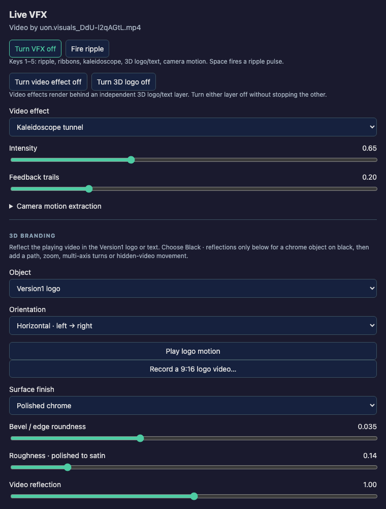
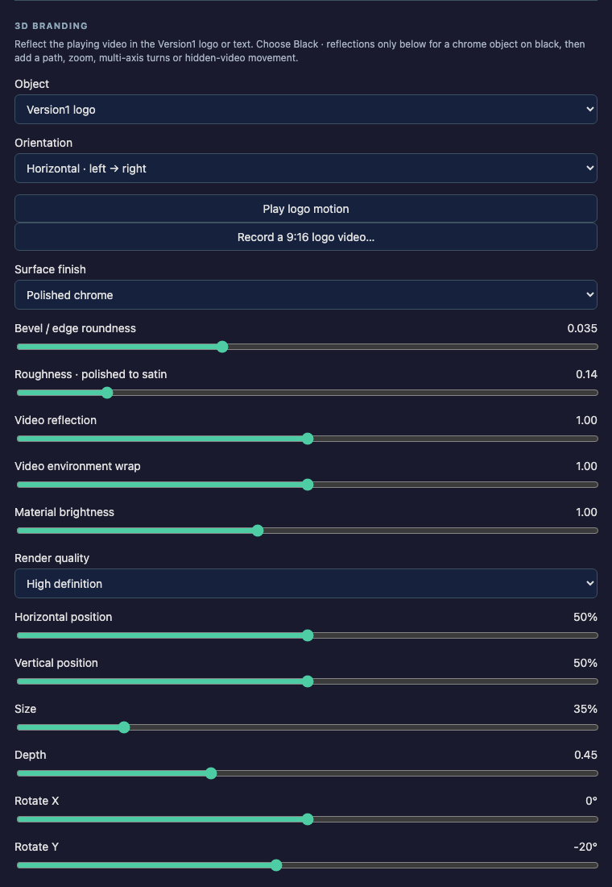

5. Video effects, chrome and text
Build a layered look and understand which controls affect which layer.
Open the controllers
In Prepare, expand Colour, VFX & 3D text. FX opens colour/trail controls; VFX opens the video-effect, camera and 3D object controller. A controller belongs to the editor that opened it. After an update, refresh that editor and reopen its controllers if they report disconnection or a version mismatch.
Background effect plus reflective object
- Select a background library video.
- Open VFX and choose a background scene such as Kaleidoscope tunnel.
- Turn on the independent 3D logo layer.
- Adjust the background's intensity/feedback and the logo's appearance separately.
- Turn off either layer to compare its contribution; Turn VFX off disables the whole composition.


| Scene / treatment | What to expect |
|---|---|
| Plain background video | Keeps the source visible without a background shader; a logo/text layer can still appear over it. |
| Liquid ripple | Bends the playing image around ripple impulses. Fire ripple supplies a manual impulse; audio can supply live triggers. |
| Video ribbons | Rearranges the image into moving chromatic ribbons. |
| Kaleidoscope tunnel | Repeats and folds the source into a tunnel. |
| 3D logo only | Makes the reflective object the main scene, optionally against black. |
| Camera motion extraction | Uses a connected movement mask to reveal, glow over or distort the background. |
Black background and separate reflections
To hide the playing image while keeping it visible in chrome, turn off the video-effect layer and choose Backdrop → Black · reflections only. The source continues to light the logo. If a background-effect layer remains enabled, it remains visible behind the object; black backdrop is not an override that hides an independently enabled background layer.
For a different image behind and inside the logo, keep the main background video, then choose a second Independent reflection video. Its playback is silent and looping; its speed and clock are separate from the main video. Same as playing video removes the independent source. Reload the source choices after adding media. A missing saved reflection is retained as missing, so restoring its file can repair the look without silently substituting another video.
Materials and text
The object layer can be the Version1 logo or editable 3D text; selecting one replaces the other in that layer. Available finishes are polished chrome, liquid mirror, brushed silver, gold, rose gold, black chrome, pearl, iridescent and original colours. Text offers modern sans, Bungee and serif styles.


Low Roughness gives sharp polished reflections; increasing it softens the highlight. Bevel rounds edges. Reflection, Environment wrap and Brightness control reflected-image contribution and exposure. Depth changes extrusion; static X/Y/Z rotation sets the pose. Rendering quality trades detail against GPU workload.
Use 3D Text for reflective lettering. Mirror sculpture, Image smear and Prism fracture are retired from new effect choices, keyboard shortcuts and Auto Perform. Existing saved cues retain their original effect and show an existing legacy cue option while being edited; select 3D text or another current effect to replace it.
Save the complete look
Use Playlists → Add current view to copy the prepared layers into a playlist. A scripted cue can store the background scene plus a logo overlay. A Show Builder effect window can do the same. Preview through the full timeline to check source ranges, tiled layouts and cue timing; the small object audition is for the individual effect, not an entire show.